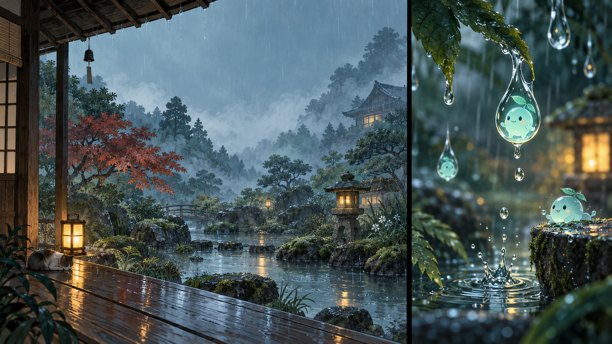
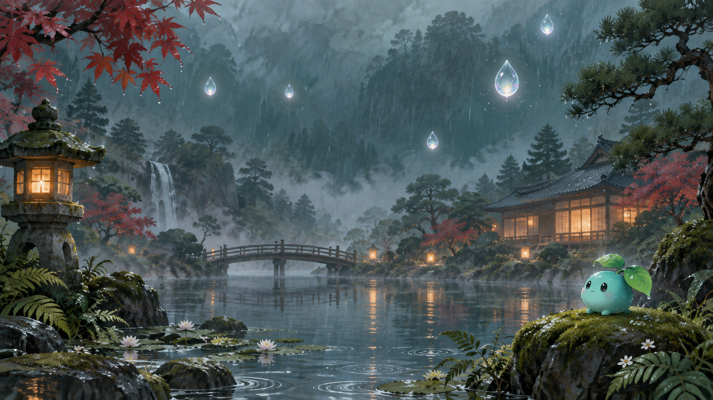
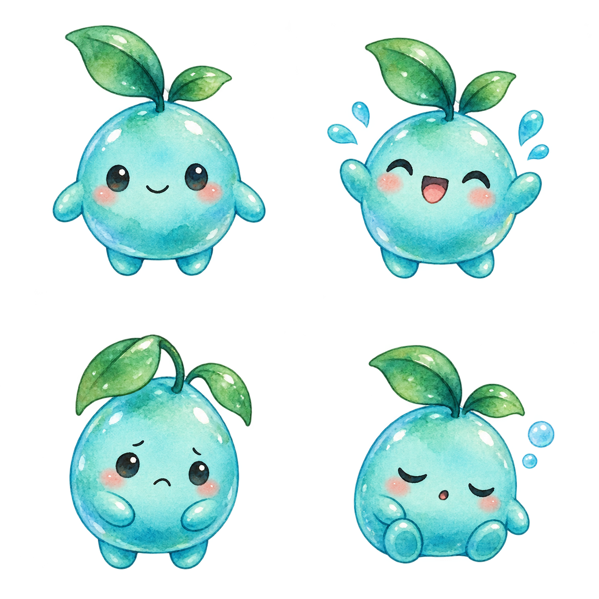
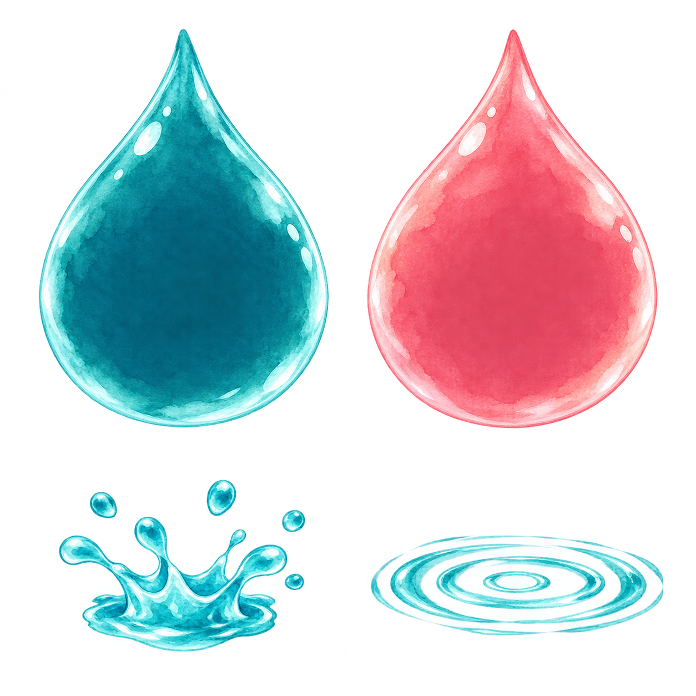

← Return to the garden
KANA RAIN · VISUAL DEVELOPMENT
A garden, imagined.
Concepts created before implementation, and the artwork that brings the game to life.

The first sketches
A quiet garden, a luminous drop, a little companion. The starting point for the visual direction.

The feeling of rain
A second concept explores the full scene, depth, lighting, and the rain spirit.

Room for reading
The production background keeps the central sky quiet so kana remain readable.

A companion for every moment
Four transparent poses used for greeting, correct answers, mistakes, and pauses.

One drop at a time
The gameplay drop, error state, success splash, and pond ripple. Kana are overlaid as real text.